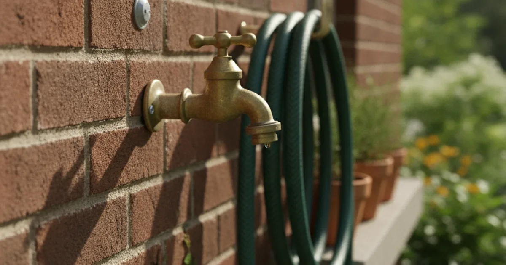
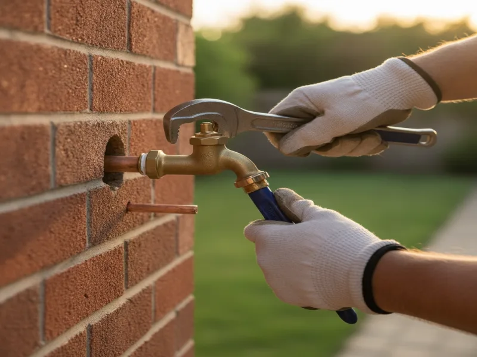

Outdoor Faucet Repair in Armonk, NY
A leaking or frozen outdoor spigot wastes water and can damage your home's exterior. We repair it before a cold snap makes things worse.
- Licensed & Insured
- Same-Day Service Available
- Upfront Pricing
- 15+ Years of Experience

Signs your outdoor faucet needs repair
The most obvious sign is water dripping from the spigot even when it's fully shut off, or water pooling around the base of the faucet against the exterior wall. You might also notice a hissing sound when the faucet is on, weak flow compared to before, or — after a cold snap — no water coming out at all.
Sometimes the real damage is hidden. A cracked pipe just inside the wall can leak into your foundation or siding without ever showing up as a drip outside, so a damp patch on an interior wall near an outdoor faucet is also worth paying attention to.
What causes outdoor faucet problems
Worn washers and seals cause most simple drips, but the bigger and more expensive cause we see every year is freeze damage. If water is left sitting inside the pipe when temperatures drop, it expands as it freezes and can crack the pipe inside the wall, even if the faucet itself looks fine from the outside.
This shows up constantly around the first hard freeze of the season, specifically in homes where the outdoor faucet, or hose bib, wasn't properly winterized beforehand. A garden hose left connected over winter is one of the most common culprits, since it traps water in the line that would otherwise drain out on its own.
What to check before calling a plumber
Disconnect and drain any hose still attached to the faucet, and if your home has an interior shutoff valve for the outdoor spigot, make sure it's fully closed. If the faucet is actively leaking or won't shut off at all, shutting off that interior valve can stop the water while you wait for us.
Avoid forcing a frozen faucet handle, since a stuck valve that's forced open or closed is a common way a small freeze problem turns into a bigger repair.
Our outdoor faucet repair process
We start by checking the faucet itself for worn washers, seals, or a cracked valve body, and testing the interior shutoff if your home has one. If the problem points to freeze damage, we check the pipe just inside the wall, since that's usually where a hard freeze actually does its damage.
Depending on what we find, repair might mean replacing the washer or cartridge, swapping the whole faucet, or repairing a cracked section of pipe behind the wall. We'll also flag if installing an upgraded frost-free faucet makes sense for your home, since those are built specifically to avoid this exact problem going forward.

When to call a professional
Call us if the faucet won't shut off, if you notice a damp spot on an interior wall near an outdoor spigot, or if the faucet worked fine last season but produces no water now that it's cold. Any of these can mean damage that's out of sight, and catching it early keeps a simple repair from turning into an interior wall problem.
It's also worth having us take a look at any other exposed plumbing if one line has already frozen, since frozen pipes elsewhere in your home are more likely after a hard freeze hits an under-protected line. This Old House has solid general guidance on winterizing outdoor faucets and plumbing if you want to get ahead of it before next season.
On the other end of the outdoor-water spectrum, if you're looking to collect and reuse water rather than just protect a faucet, we also handle installing a rainwater collection tank for larger Armonk-area properties.
See our year-round plumbing services for everything else we handle, in every season.
Frequently asked questions
Why does my outdoor faucet only leak in cold weather?
That usually points to a small crack from a previous freeze that only shows itself under water pressure or temperature changes. It's worth having it checked before the next cold snap makes it worse.
Do I need to winterize my outdoor faucets every year?
Yes, especially in our area. Disconnecting hoses and draining the line before the first hard freeze is the single best way to avoid a cracked pipe.
My outdoor faucet has no water at all — is that a freeze issue?
It can be. A frozen line can block flow entirely, or a cracked pipe further back can be leaking water away before it reaches the faucet. We'll track down which one it is.
What's a frost-free faucet, and is it worth installing?
It's a faucet designed so the actual shutoff point sits further inside the wall, away from freezing temperatures. It's a worthwhile upgrade if you've had freeze damage before.
Can a leaking outdoor faucet damage my home?
Yes. Water pooling against your foundation or siding, or leaking into an interior wall, can cause real damage over time if it's left unaddressed.
Do you repair outdoor faucets in the winter?
Yes, we handle outdoor faucet repairs year-round, including the freeze-related issues that tend to show up during cold snaps.